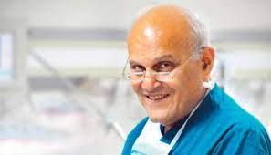

Dr. Magdy Yacoub
The man who saved millions of lives

Sir Magdi Habib Yacoub OM FRS, is an Egyptian retired professor of cardiothoracic surgery
Here's a time line of Dr. Magdi's life:
In 1957 - Yacoub graduated in medicine from Cairo University
In 1973 - he became a consultant cardiothoracic surgeon at Harefield Hospital
In 1974 - he was part of the team that performed the first open heart surgery in Nigeria
In 1980 - Yacoub began the transplant programme at Harefield Hospital
In 1983 - Yacoub performed the UK's first combined heart and lung transplant at Harefield
In 2008 - the Magdi Yacoub Global Heart Foundation launched the Aswan Heart project and founded the Aswan Heart Centre the following year.